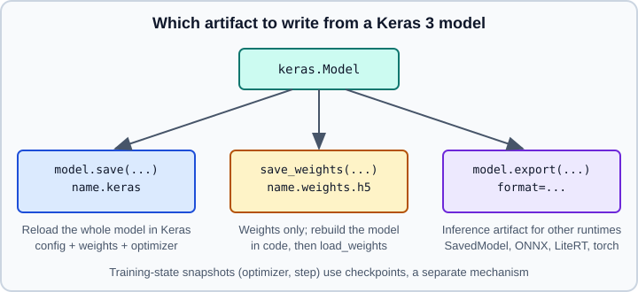

Saving Keras Models: .keras, Weights & export
|
This content was generated with the assistance of AI and should be verified against the official documentation before being relied on in production. |
Keras 3 separates three jobs that older tutorials blur together: saving a model so that Keras can reload it (the .keras archive), saving only the weights (.weights.h5), and exporting an inference artifact for another runtime (model.export). This page explains each, the security model behind safe_mode, the differences from the legacy .h5 and SavedModel behaviour, and how custom classes are registered so that they survive a round trip. Low-level TensorFlow saving is on SavedModel & Signatures, training-state snapshots are on Training Checkpoints, and the framework-neutral view is on ONNX & Interoperability and Deploying and Serving Models. The PyTorch equivalent is Saving and Loading in PyTorch. Subclassing models and layers are described in Subclassing & Custom Layers, and the move from Keras 2 is covered in Migrating from Keras 2 to Keras 3.
It targets Python 3.13, TensorFlow 2.21 with Keras 3.15 (TensorFlow 2.22 is upcoming) and was checked against the official documentation on 2026-10-30. Examples were run on Python 3.13 with TensorFlow 2.21 and Keras 3.15 (CPU) on 2026-10-31; the ONNX export used tf2onnx 1.17.0, which Keras needs for format="onnx" on the TensorFlow backend.

The three artifacts
| Artifact | Written by | Use it for |
|---|---|---|
|
|
Reloading the whole model in Keras: architecture, weights, compile configuration and optimizer state. |
|
|
Weights only. You rebuild the architecture in code and load into it. |
Export directory or file |
|
Inference in other runtimes: TF Serving, LiteRT, ONNX Runtime, or |
The .keras format
A .keras file is a zip archive. According to the Keras serialization guide it holds a JSON configuration (model, layers and other trackable objects), an H5-based state file with the weights and optimizer variables, and a small metadata file recording items such as the Keras version. A full save therefore includes architecture, weights, compile information and optimizer state, so training can resume after loading. In Keras 3 it is the format model.save() is meant for: any other extension except the legacy .h5 raises ValueError: Invalid filepath extension for saving, and a .h5 path still works but logs a warning that HDF5 is a legacy format.
import keras
import numpy as np
model = keras.Sequential(
[
keras.Input(shape=(8,)),
keras.layers.Dense(16, activation="relu"),
keras.layers.Dense(1),
]
)
model.compile(optimizer="adam", loss="mse")
x = np.random.rand(64, 8).astype("float32")
y = np.random.rand(64, 1).astype("float32")
model.fit(x, y, epochs=2, verbose=0)
model.save("regressor.keras") # extension must be .keras
restored = keras.saving.load_model("regressor.keras") # keras.models.load_model is equivalent
np.testing.assert_allclose(model.predict(x), restored.predict(x), rtol=1e-6)
restored.fit(x, y, epochs=1, verbose=0) # optimizer state was restored tooSignatures worth knowing (from the Keras API reference):
-
Model.save(filepath, overwrite=True, zipped=None, **kwargs)is an alias ofkeras.saving.save_model. The path must end in.kerasunlesszipped=False, which writes an unzipped directory (the default when pushing to the Hugging Face Hub). -
keras.saving.load_model(filepath, custom_objects=None, compile=True, safe_mode=True). Passcompile=Falsewhen you only need inference or want to compile with different settings.load_modelalso accepts an Orbax checkpoint directory (see Training Checkpoints). -
overwrite=Falseprompts interactively if the file exists, so set it explicitly in scripts and CI.
Weights-only files
def build():
return keras.Sequential(
[keras.Input(shape=(8,)), keras.layers.Dense(16, activation="relu"), keras.layers.Dense(1)]
)
model = build()
model.save_weights("regressor.weights.h5") # name must end in .weights.h5
fresh = build() # same architecture, new weights
fresh.load_weights("regressor.weights.h5")Points to remember:
-
The file name must end in
.weights.h5; Keras 3 rejects other extensions for this call (ValueError: The filename must end in .weights.h5). For very large models,save_weights("model.weights.json", max_shard_size=0.25)writes a.weights.jsonindex plus shard files namedmodel_00000.weights.h5and so on, each at mostmax_shard_sizeGB;load_weightsaccepts the.weights.jsonfile. -
Weights are matched to layers by the structure of the model, so the architecture, layer order and layer names at load time must correspond.
load_weights(path, skip_mismatch=True)skips layers whose shapes do not match instead of raising; use it deliberately, for example when swapping a classification head, because it hides real mistakes. -
Building the model first matters: layers that are still unbuilt have no variables to receive weights. Give the model a
keras.Inputor call it once on sample data. -
A weights file contains no optimizer state. To resume training exactly, save the whole model or use a checkpoint.
Architecture only
For architecture without weights, model.get_config() with Model.from_config(config), or model.to_json() with keras.models.model_from_json, round-trip the layer graph. They do not keep weights or compile settings. keras.models.clone_model(model) copies the structure with fresh weights. All of these need the same custom-object registration as a full save (below).
Exporting for inference with model.export
model.export writes an artifact meant for serving, not for reloading as a Keras model. Per the API reference its signature is Model.export(filepath, format="tf_saved_model", verbose=None, input_signature=None, **kwargs) and the formats are "tf_saved_model" (default), "onnx", "openvino", "litert" and "torch". Export is supported with the TensorFlow, JAX and Torch backends.
import tensorflow as tf
model.export("export/regressor", format="tf_saved_model")
reloaded = tf.saved_model.load("export/regressor")
preds = reloaded.serve(x) # the default endpoint is named serve
# Fix the input signature explicitly (batch dimension left dynamic)
model.export(
"export/regressor_v2",
format="tf_saved_model",
input_signature=[tf.TensorSpec(shape=(None, 8), dtype=tf.float32)],
)
# Other targets take the same call
model.export("export/regressor.onnx", format="onnx") # needs tf2onnx on the TensorFlow backend
model.export("export/regressor.tflite", format="litert")The onnx format needs extra packages: on the TensorFlow backend, Keras 3.15 raises ImportError: This requires the tf2onnx module until pip install tf2onnx is done. The litert export works with the converter bundled in TensorFlow 2.21. Both print Saved artifact at '...' and write a single file at the given path; see On-Device Inference with LiteRT and Serving with TensorFlow Serving for what to do with the result. With the PyTorch backend, a litert export does not support dynamic shapes: None dimensions become 1, so pass a static input_signature that matches your largest runtime shape.
ExportArchive for multiple endpoints
When one SavedModel must expose several functions, for example inference and a training-mode call, use keras.export.ExportArchive:
archive = keras.export.ExportArchive()
archive.track(model)
archive.add_endpoint(
name="predict",
fn=lambda inputs: model(inputs, training=False),
input_signature=[keras.InputSpec(shape=(None, 8), dtype="float32")],
)
archive.write_out("export/regressor_archive")
served = tf.saved_model.load("export/regressor_archive")
print(served.predict(x).shape)track registers the model (and any tf.lookup resource you created by hand), add_endpoint registers each callable with its input signature, and write_out writes the SavedModel. Endpoints are visible to TF Serving, and the first one is aliased as serving_default unless you registered a function with that name. The resulting directory is an ordinary SavedModel, so everything on SavedModel & Signatures applies.
safe_mode and the Lambda deserialization risk
A saved model is a program description, and a Lambda layer stores a Python function. Loading arbitrary code from an untrusted file is a classic remote-code-execution path, so load_model defaults to safe_mode=True, which refuses to deserialize Lambda layers that carry serialized Python bytecode. The Keras API reference states that setting safe_mode=False can execute arbitrary code and that the setting only applies to the Keras v3 format.
# Risky: a Lambda layer serializes its function body
risky = keras.Sequential(
[keras.Input(shape=(4,)), keras.layers.Lambda(lambda t: t * 2.0)]
)
risky.save("risky.keras")
try:
keras.saving.load_model("risky.keras") # safe_mode=True by default
except Exception as err: # Keras raises a ValueError explaining the refusal
print("refused:", type(err).__name__)
# Only for files you produced or fully trust:
trusted = keras.saving.load_model("risky.keras", safe_mode=False)The safer design is to avoid Lambda entirely: write the logic as a small keras.layers.Layer subclass (or use keras.ops inside a registered function) so that only a class name is stored, and the code that runs is code you imported yourself. Treat any .keras, .h5 or SavedModel from an unknown source like an untrusted pickle: do not load it with safe_mode=False, and prefer weights-only files from outside sources, since they contain tensors but no executable configuration. Keras also provides a global switch to allow unsafe deserialization (keras.config.enable_unsafe_deserialization()); avoid it in shared code, because it silently disables the protection for every later load.
Custom objects: get_config and registration
Anything that is not built into Keras (custom layers, losses, metrics, functions used as activations) must be reconstructable from the saved configuration. There are two requirements:
-
The class defines
get_config()returning the constructor arguments. If an argument is itself a Keras object, also overridefrom_configand deserialize it withkeras.saving.deserialize_keras_object. -
At load time Keras can find the class, via registration, the
custom_objectsargument orcustom_object_scope.
@keras.saving.register_keras_serializable(package="demo")
class Scale(keras.layers.Layer):
def __init__(self, factor=2.0, **kwargs):
super().__init__(**kwargs)
self.factor = factor
def call(self, inputs):
return inputs * self.factor
def get_config(self):
config = super().get_config()
config.update({"factor": self.factor})
return config
inputs = keras.Input(shape=(4,))
model = keras.Model(inputs, Scale(3.0)(inputs))
model.save("scaled.keras")
# Option 1: registered class, no extra arguments (class must be imported/defined first)
m1 = keras.saving.load_model("scaled.keras")
# Option 2: explicit mapping, registration not needed
m2 = keras.saving.load_model("scaled.keras", custom_objects={"Scale": Scale})
# Option 3: scope
with keras.saving.custom_object_scope({"Scale": Scale}):
m3 = keras.saving.load_model("scaled.keras")Notes:
-
Registered objects are stored under a
package>Namekey (heredemo>Scale); with no arguments the package defaults toCustomand the name to the class name. The class must be defined, and the module imported, in the process that loads the file; registration happens at import time. -
In
get_config, callsuper().get_config()so thatname,trainableanddtypesurvive. Forgetting**kwargsin__init__is the most common cause of load errors. -
Custom loss and metric functions saved with
compile()also need registration, or you can load withcompile=Falseand compile again. -
keras.saving.get_custom_objects()returns the global registry;.clear()empties it, which is useful in tests that check for missing registration. -
keras.saving.serialize_keras_objectanddeserialize_keras_objectturn any Keras object into a config dict and back, which is what a customfrom_configneeds.
Legacy formats and Keras 3 behaviour
Older books and tutorials describe the following, which no longer matches current Keras. A short dated table:
| Era | Typical advice | Keras 3.15 status |
|---|---|---|
Keras 2 / TF 2.x until Keras 2.15 |
|
|
Early TF 2 tutorials |
|
Not supported by Keras 3 for loading directly. Load a SavedModel with |
HDF5 ( |
Single-file full model. |
Legacy. Keras 3 still writes (with a warning) and reads |
With Keras 3.15, load_model on a SavedModel directory raises ValueError: File format not supported: filepath=... Keras 3 only supports V3 .keras files, legacy H5 format files (.h5 extension), followed by a note that the legacy SavedModel format is not supported. A .h5 file written by Keras 3 loads back, but .h5 files from Keras 2 with custom layers or unusual configurations may not, so test the files you care about. The practical procedure for an old artifact is: load it once in the version that produced it (or in tf_keras, the Keras 2 package), then re-save as .keras or export, and keep a numerical comparison test between the two (see Migrating from Keras 2 to Keras 3).
Which one should I use?
-
Archiving or sharing a model among Keras users:
.keras. -
Fine-tuning or transferring weights into code you own:
.weights.h5; see Transfer Learning & Fine-Tuning. -
Serving:
model.export(..., format="tf_saved_model"), then TF Serving; mobile:"litert"; cross-framework:"onnx". -
Preemptible training runs: a checkpoint callback, not repeated
.kerassaves; see Training Checkpoints. -
Pipelines, registries and model files from the wider ecosystem: Model formats and Experiment Tracking and MLOps.
Common mistakes
-
Saving to a path that does not end in
.keras(or.weights.h5for weights). -
Expecting
model.save("dir")to produce a SavedModel as in older tutorials. -
Using
Lambdalayers, then discovering the file will not load undersafe_mode=True. -
Loading a custom model without importing the module that registers the class, or without
get_config. -
Calling
load_weightson an unbuilt model, or with a changed architecture, and masking the error withskip_mismatch=True. -
Treating a model file from the internet as data: it is configuration that can execute code if
safe_modeis disabled. -
Comparing a reloaded model to the original with different inference settings (for example dropout active) and concluding the save lost information. Compare
predictoutputs.